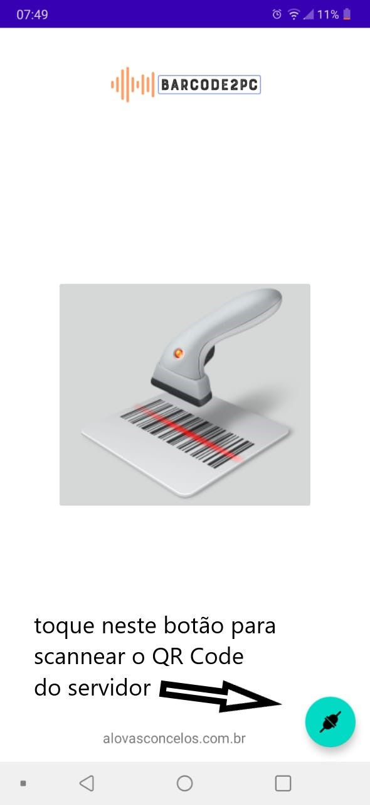

<div class="container">
    <div class="row">
      <h4>Barcode2PC</h4>
      <p>
        Servidor para o APP Barcode2PC, que permite o uso do seu celular (Android),  como um leitor de códigos de barras.<br>
        Eu sei que um celular custa MUITO mais do que um bom scanner de código de barras. <br>
        A ideia aqui é usar o que você já tem - o celular. Testei com o meu celular, cuja câmera nem é das melhores (um LG K50s) e a leitura ficou bem rápida.<br>
        Para instalar o APP vá em https://play.google.com/store/apps/details?id=br.com.alovasconcelos.scan2pc ou pesquise por 'alovascconcelos' no Google Play.<br>
        Depois faça o download do servidor <a href='https://alovasconcelos.com.br/barcode2pc/barcode.exe' target='_blank'>clicando aqui</a>.<br>
        Execute o programa barcode.exe e siga as instruções que serão apresentadas na tela. <br>
        No APP, clique no botão verde para scanner o QR Code apresentado pelo programa servidor.<br>
         <br>
        Pronto! Agora é só clicar no botão no centro da tela do APP para scannear códigos de barras. Os códigos serão transferidos para o computador como se tivessem sido digitados a partir do teclado dele.<br>
        Para testar, você pode abrir o notepad e scannear alguns códigos de barras.
      </p>
    </div>
</div>
